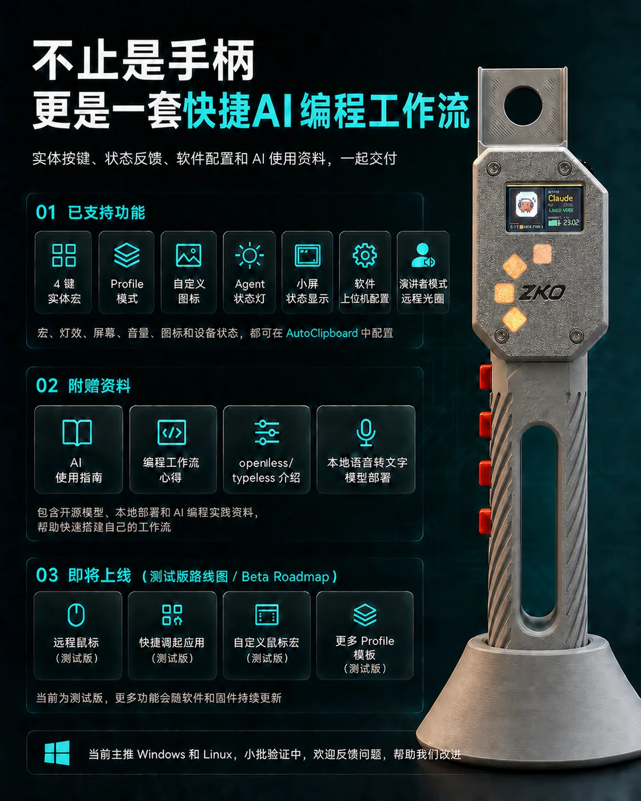

安装 AutoClipboard
识别 Windows、Linux 或 macOS，选择正确附件，校验版本并完成安装或升级。
ZKO CODEX PLUGIN · AI-CODING-HANDLE
让 Codex 自动安装或升级 AutoClipboard、识别 D4/V3、连接 Agent Hook、配置按键并进行只读诊断。涉及系统设置、驱动或固件写入时，仍会先向你确认。
复制后粘贴到 Codex，它会根据当前系统选择正确安装路径。
ONE REQUEST · COMPLETE SETUP
它不是单纯的下载链接，而是一套可审计的安装、连接、诊断和维护流程。
识别 Windows、Linux 或 macOS，选择正确附件，校验版本并完成安装或升级。
配置 Codex 与 Claude Code 的原生状态连接，并检查 Hook 和运行环境是否就绪。
区分 D4/V3，排查 USB、串口和蓝牙，并按你的工作方式配置宏按键。
普通诊断保持只读；系统修改和固件更新绑定到明确设备与方案后再次确认。

INSTALL ONCE
Codex 推荐安装完整插件；其他支持 Agent Skills 的客户端安装同一个 `ai-coding-handle` Skill。所有公开安装路径来自同一个源。
codex plugin marketplace add https://gitee.com/shan-yujun/Communist-Manifesto-Releases.git
codex plugin add zko-ai-coding-handle@zko-labcodex plugin marketplace add Lijinzh/Communist-Manifesto-Releases
codex plugin add zko-ai-coding-handle@zko-labnpx skills add https://gitee.com/shan-yujun/Communist-Manifesto-Releases.git --skill ai-coding-handle --agent '*' -g -y --copy安装完成后：新建一个 Codex 任务或重启对应 Agent，再说“使用 `$ai-coding-handle` 帮我配置字库”。如果 Gitee Git 不可用，可将通用命令中的来源替换为 Lijinzh/Communist-Manifesto-Releases。
CLEAR SAFETY BOUNDARIES
先检查版本、连接、Hook 和设备身份，不会一上来就重置蓝牙或改系统。
驱动、Linux 蓝牙电源规则等软件级变更，会展示目标和影响后再执行。
固件方案会绑定设备、板型、版本和校验值；只有你针对该方案再次确认后才写入。